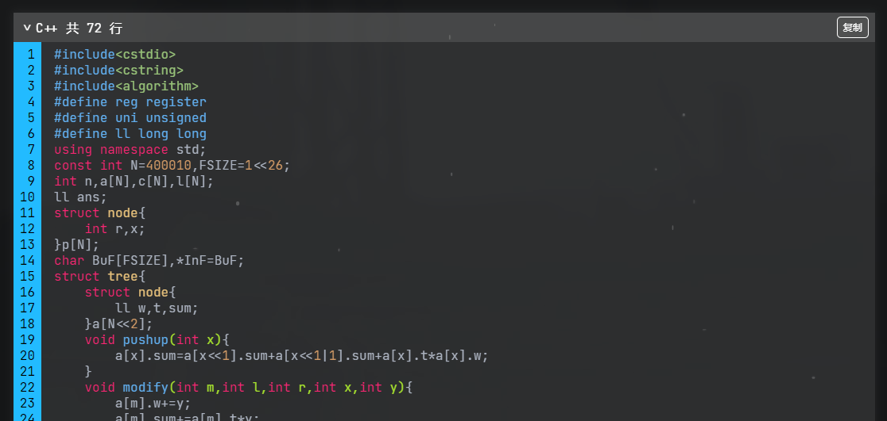

INFO
留言板也在这里。
tips:你知道吗，这个日志是后来补上的。
PR 0
P0
首先是这样的，我想折腾，于是决定逛一下 github。
然后想要搭一个 blog。
然后本来是选的 Obsidian 然后跟着作者跑到了 Aurora，本来东西快做完了。但是在研究 Valine 的时候，在胡乱翻在侧边的时候发现了 hexo-theme-arknights。
P0.5
然后这个依赖项就恶心起来了，主要是那个三年没更的 hexo-renderer-sass 导致的。
首先就是 fsevents 明明是个 Windows 下不需要的东西，然后非要装，然后就
ERROR，最后加了个 --force
搞定了，结果换了台机子又不行了，因为 npm 版本太高不能
--force，只能手动降级。
总之看着一大堆版本不对的依赖项挺糟心的。
P1
搬东西。
因为黑历史太多所以选择性的搬了一些比较近的。
然后被 mermaid 搞一晚上，最后发现是直接引入的 mermaid.js
只会识别
<div class="mermaid.js"></div>，所以我写的 code
fence 就全部锅掉了。
幸好 mermaid 用的也不多，随便改改算了。
然后数学公式又炸掉了，主要是 Typora 与博客园都支持的
align 在 hexo 这里不支持了。
P2
首先就是对着样式一顿魔改，因为我看起来实在是很不舒服。
然后，我想说：CSS is Awesome。
主要是字体大小上下间距什么的，然后把原主题里吃掉的
description 给搞了出来。
然后魔改了侧边栏，把目录上置顶了，并调整了 宽度。
把奇怪的翻页器居中了，总之就是 flex 真香。
然后发现 <article> 的位置因为有
<aside> 被挤的有些左，于是进 _flex.sass
里一顿乱搞。
然后觉得这个 <article>
在滚动的时候像个窗口一样的不大对劲，然后开始试图搞成像纸张一样的东西。
开始使劲加 flex，然后发现能滚了。
然后 <header> 出问题了，然后又去研究
position，并开始对着 <header> 加
flex，最后总算是做完了，并给 <header>
加了个 shadow。
总所周知，有些东西用完就会上瘾，所以现在 shadow
一大堆。
总之还不错。
P3
虽然跑过来中转了 Valine，但因为 LeanCloud 强制实名于是就弃了。
gitalk 的配置倒还好整，唯一一个诡异的锅是
Authorization callback URL 里面必须要有 https
不然就会锅掉。
然后再小小改了一下 gitalk.js 搞到本地。
但是还是在这上面花了很长时间因为想交 PR。
被字符串搞自闭了最后决定将锅丢给用户。
PR 1
P0
首先就是，不要用 pandoc 做渲染，不然侧边栏就彻底坏掉了。
虽然原来动态还是坏的，跟 Yue_plus 协调了一下修好了，但是我觉得不好看（
然后决定整成 rvalue 那样的。
因为 Yue_plus 写的 TS 于是跑去学了学 TS 并假装自己会了，总之看起来是写出来了也没什么 bug。
P1
又换了台机子（指机房）于是发现 hexo-renderer-sass 用不了了，在经过两天的搜索之后发现是其依赖项 node-sass 的版本太低，然后不支持 node.js 的新版本。
然后发现了 dart-sass 是可以用的，不过虽然 API 没动但是毕竟名字不一样，然后直接魔改进 node_modules 但是好像哪里不太对劲。
最后发现了 hexo-renderer-dartsass 直接装就完事了。
P2
嗯，搜索。
首先因为不想用第三方所以决定整成前端搜索，然后随便装了个 hexo-generator-searchdb，并搞了个 NexT 作为参考，然后开始对着别人写的代码乱搞。
首先就是多搞几个 div 然后在 js
里面改改名称，然后再糊一糊，因为不打算用图标所以做了大片大片的魔改。
甚至发现原来的代码是有些问题的，也一并改掉了。
然后再修一修截取啊，排序啊，什么的。
中间省去一大堆对着 F12 Debug 的过程。
甚至还把浏览器搞崩几次。
总之觉得 JS 的奇妙语法真是一言难尽。
于是成功手癖把赋值写成了 ===。
本地测试的时候没什么问题了，结果 deploy 上去一测试：
草，怎么一直在 loading。
然后发现这个 search.xml 有足足两个
MB，我觉得 github 这服务器受不了。
更要命的是这东西不加载还会影响字体文件，然后整个页面看起来就很崩。
改了改选项暂时是把大小压下去了，但是这个优先级的问题还没解决。
P3
开始做代码复制和折叠什么的，做了大概可能也许应改有 5h.
用 JS 搭框架与 CSS 调的很快。
然后开始做核心功能 copy，一开始想参考 ouuan
结果发现代码高亮的机制不一样直接木大（highlight.js 不使用
DOM 标记一行，而是直接 <br>）。
然后发现一个很棒的东西：.innerText，直接拎起来往
navigator.clipboard 里 write 就行。
最后再跟 TS 的 warning 搏斗了半天，现在 VSC 还在疯狂 warning.
后面差不多做完的了把截图丢尽群里，然后有人识别代码片段是平衡树：

然后发现附加 SASS 需要下划线前缀不然会被编译掉，改了改了。
P4
不知道为什么各种 minify 都没有完全 work 的，最后把 hexo-neat 与 NexT 家的 hexo-optimize 混合起来了，效果还行。
关于空格
然后因为写了一篇带有 mermaid 的 post 又开始跟 code fence 较劲。
然后发现之前的 mermaid
炸掉了，仔细检查发现新版本每一行的末尾必须加分号，之前可以不加。
草绳又不用了，玩不明白了属于是。
但是因为预览问题还是决定把 code fence 格式 mermaid 搞出来。
搜索文档无果，最后决定在 JS 里面把 mermaid 过滤出来，再把
highlight.js 搞出来的 <br>
去掉，然后再喂给 mermaid.js.
提取文本倒是比想象中容易，.innerText 我的超人。
然后 mermaid 的初始化把自动加载去掉，然后加一个监听等页面加载完了再启动。
P4.5
我们考虑实现一个鹰式的鼠标指针，然后通过对着官网一顿乱删可以把具体的 DOM 取出来。
然后可以把 CSS 和 JS 搞下来慢慢研究。
首先先把 .cursor-outer 搞定，然后发现要用
window.setInterval()，接下来成功遇到 this
指针问题，报错报到死。
半个小时候后 BDFS 发现加一个 .bind(this) 把
this 指针打包进去就行。
写了一大堆修正什么的发现都不太丝滑，最后发现在位置大幅改变（鼠标超出窗口再从别处回来）的时候行为不太对劲。
草，距离没加绝对值，方向爆掉了。
移动立刻比德芙还要丝滑。
然后是点击的特效，也是写了一大堆修正，终于调对劲了，然后把鼠标移出
<main> 哦豁不对，然后发现 z-index
没改，然后又调上十几分钟。
总之跟鹰角相似度应该也许可能还是比较高的吧。
最后是可点击元素的样式变化，这个真的阴间，因为不是所有元素都是开局加载。
一开始只是代码折叠框的问题，于是把两个元素都开局放进去，然后 CSS 解决问题，甚至代码变得好看了不少。
然后搜索炸了，只好再次祭出 window.setInterval()。
结果搜索还是炸了，因为关闭的时候 addEventListener()
触发不了。
然后决定把 TS 的类搞到对象里，然后让 search.js
关闭的时候访问一下关掉，但是如果鼠标在 <header>
上哦豁又挂了。
再加两个 addEventListener() 判一手在不在
<header> 里，总算是没有什么大毛病了。
P4.75
第二天发现写出来的东西性能太渣了。
主要是那个动态添加 addEventListener()
的计时器太慢了导致的。
一顿 BDFS 发现了 MutationObserver
这个对象可以监听页面修改，写了一发把计时器去了，效果极佳。
顺带把其他两个计时器改成动态启停的，现在性能应该还可以。
P5
我把在 2021/2/4 被 Yue_plus 干掉的 hexo-blog-encrypt 请回来了。
主要就是修 toc 的问题，这里吐槽一下 hexo-blog-encrypt 不能设置 toc 的 div id 导致命名看起来很蠢。
而且为什么回调不能用设置之类的东西做啊。
胡乱装了个 hexo-admonition 然后发现这东西其实挺拉跨的啥也没有。
所以又写了一会 TS 和 SASS 总算好了一点。
具体的颜色以后再调吧。
P6
发现 CSS （尤其是滚动）性能出大问题，又开始了一晚上的面向文档编程。
然后页面需要重构，把滚动条移到最外层元素上，然后调定位调死人。
整了一个 Pjax 不知道能不能令观感好一些，反正我感觉还行。
虽然加载还是等半天就是了。
P7
好耶被催着交 PR。
首先就是把本地一大堆魔改过的代码换成可以公开使用的，尤其是一些奇怪的附加项。
然后把一些新功能加个选项啥的。
然后修 bug，一大堆我不用的东西因为改动直接就坏掉了。
然后别人测试出 bug 继续修。
顺带的把加密的问题搞定了，不知道为什么不能不显示预览。
PR 2
P0
Pjax 确实是个天坑。
发现 Pjax 与各评论系统并不兼容，只好自己搞搞兼容层。
gitalk 的问题在于 Pjax 是先替换 DOM 再 pushState()
的，所以在重新初始化 gitalk 的时候并不能把新的 URL 搞上去。
那么我们加一个 pjax::success
的监听器进行初始化就行。
P1
有人要字数统计是吧。
正好我写过直接往上加。
P2
Valine 的问题并没有解决，在数小时寻找到底哪里异步无果之后发现：
https://github.com/xCss/Valine/issues/138
解决了。
PR 3
P0
<header> 的 issue 越来越多了
我该怎么办？，决定重写。
上角的官网搞了一发，然后开始糊 CSS，发现 transform
非常有趣。
然后小写一手 JS 顺带的把鼠标特效优化了一下，用新标准重写
JS，主要是几个 foreach 看起来很行。
P1
继续回去倒腾 CSS。
主要在写新 <header>
顺带把滚动条什么的优化了一发。
测试的时候发现 <header> 高亮不太对，然后向 JS
里面写了点简单的匹配。
在准备写搜索的 CSS 的时候意识到左右的分讨非常难搞，而且因为 CSS 的智障选择优先级导致一大堆问题。
去观摩了一下 NexT 是怎么处理的，然后发现 hexo-renderer-stylus 插件带有原生的读 hexo 配置能力。
你官方还是你官方。
看了一下 stylus 发现能力上基本是 SASS 的超集，而且语法也差不多是 SASS 的超集，所以我们改一下后缀名，无缝迁移，稍稍的组织了一下文件感觉良好。
然后按照 NexT 的写法大概整了整，效果非常不错，再也不需要在 CSS 里面写分类讨论垃圾代码了。
顺带的把 <header>
的高度问题解决了，可以自适应了。
P2
修 Pjax 行为，虽然我不太确定自己修了什么。
不知道以后还会不会再修。
P3
给搜索整点动画，一开始利用 CSS
的计算机制整了一个动画（通过一些属性不适用 transition
而一些属性使用来完成），后来规范了 CSS 代码之后就废了。
还是要写点正规东西。
折腾 animation 大概是写出来了。
让 JS 那边配合了一下。
P4
移动端胡乱写写，感觉还行。
然后炸了，pointer-event
导致了一堆问题，其中有一个一直遗留到了 PR 之后才发现。
PR 4
啊好像三个月过去了啊，那我来补档一下吧。
P0
为 <header>
的“当前在哪里”的高亮多写了一点逻辑，主要是 tag 和
categories 都放在 archives
里面，所以把这样的链接塞进 attribute 里面了。
P1
继续修复万年修复不好的 Pjax，并决定加一些切换动画。
本来想写一些花里胡哨的东西来模仿单页面应用的，后面发现 Pjax 提供的 API 简单得并不能做出来。
你等我哪天自己写一个就有了。
由于动画在进行的时候会加一堆 position: absolute
所以给一堆的块定了长宽，总算是不会出现奇怪的抖动了。
吐了，调试这个东西巨阴间。
然后重新做了加载条动画。
P2
继续写 TS，把文件做了一下拆分，这样就不用总是 Ctrl+F 修 Bug 了。
把搜索生成器内置了，避免无聊的设置问题。
然后做了一些格式化，Sublime-LSP 挺顶的。
P3
进行移动端 <header> 重写，增加了很多滚动交互。
尤其是吸收群内 @大赵同学 的想法顶部做了很多东西。
CSS 比较难搞。
期间做了 Firefox 的一些工作。
PR 5
这一次的起因是因为这篇题解。
P0
粗体斜体以及链接都有颜色，然后成功导致了冲突。
通过技法大概能绝大多时候避免了吧。
P1
见过最神奇的 Bug。
这是因为在以上跟乱码没什么区别的压缩表中出现了 $&
的字符组合，然后 $ 在 JS
的正则中身兼要职反正总之不知道为什么就是寄了。
溜了溜了，滚回前端方案去了。
P2
又看到（我为什么要说“又”）Issues 78，想想顺手写了吧。
主要就是让 Pug 来递归展开，然后 CSS 干活就行了。
移动端由于不能用 hover 再写一点 TS 就完事。
顺带修了一个遗留很久了的历史问题，虽然其实一般没什么影响。
2022/11/8
哇哦，上次编辑是在 7 月份，现在已经……11 月了。
总之修了很多 bug。
2023/2/1
前面忘了，去年，后面忘了。
i18n 大概做好了。
亮色模式在做了。
2023/5/9
社交链接完成，修复了一个很久的 bug。
2023/7/9
加入了：
鼠标-><-鼠标
1 | |
Tab 在咕咕了。
2023/7/10
脑溢血，ad- 的前缀命名被 AdBlock 拦截了。